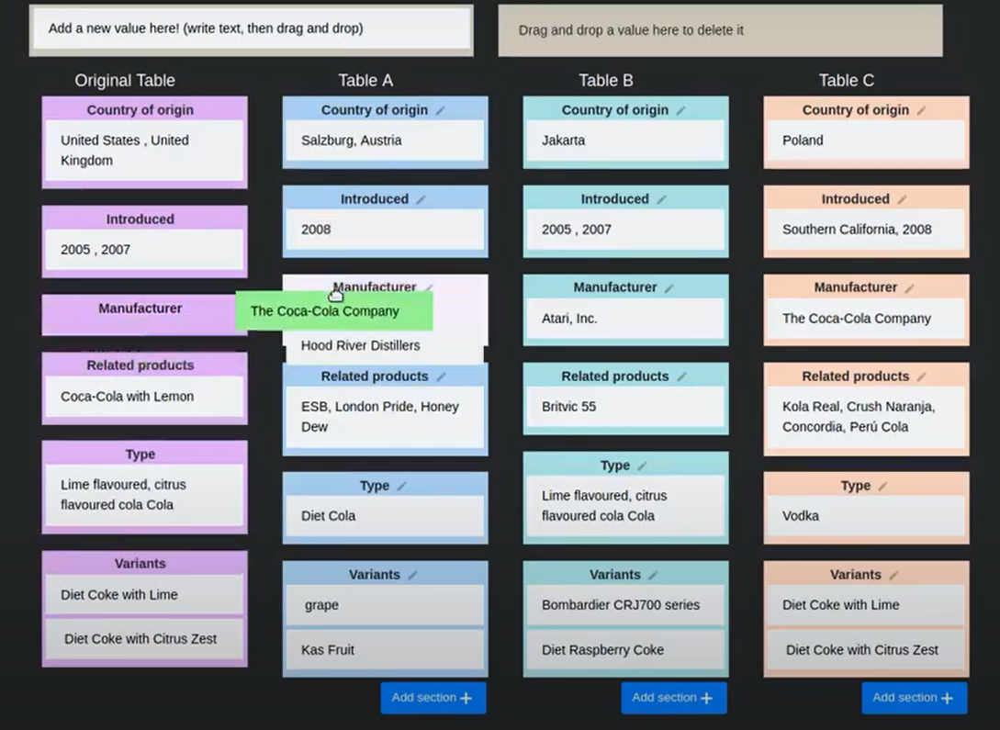
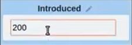

An Effective Platform for Tabular Perturbation
About
To truly grasp reasoning ability, a Natural Language Inference model should be evaluated on counterfactual data. TabPert facilitates this by assisting in the generation of such counterfactual data for assessing model tabular rea- soning issues. TabPert allows a user to update a table, change its associated hypotheses, change their labels, and highlight rows that are important for hypothesis classification. TabPert also captures information about the techniques used to automatically produce the table, as well as the strategies employed to generate the challenging hypotheses. These counterfactual tables and hypotheses, as well as the metadata, can then be used to explore an existing model’s shortcomings methodically and quantitatively.
tldr: TabPert is a tool to augment existing tabular datasets to effectively and efficiently create counterfactual datasets.
Annotation Instructions
This is the instructions document for using TabPert. You should watch this video to see the platform in action.
When you launch TabPert in your browser and open a particular Table for which you wish to generate counterfactual data you will be presented with 3 tables (Table A, Table B, Table C) whose entries are created by shuffling data from similar tables.

These automatically perturbed tables can be edited by the user manually according to his needs. There are two major ways to do so
Changing the Table: In this, we change the table in the several ways, as described below:
- Drag and drop: We can drag and drop key-value pairs within the table and also from one table to another.




Changing the hypothesis: We can also make changes in the hypothesis and capture the strategies used to make these changes in TabPert. The various ways are as follows:
- Editing the text of Hypothesis: This is done similar to editing the value in the table, i.e. just place your cursor on the hypothesis you wish to edit and change it to the desired value.

- Editing the Label of Hypothesis: The user can use the drop-down menu to select the label for the hypothesis out of (“C” for Contradictory; “E” for Entailed and “N” for neutral)

Citation
Please cite our paper as below if you use TabPert.
@inproceedings{jain2021tabpert,
title={TabPert: An Effective Platform for Tabular Perturbation},
author={Nupur Jain and Vivek Gupta and Anshul Rai and Gaurav Kumar},
month = nov,
year = "2021",
address = "Online",
}Acknowledgement
Authors appreciate the Utah NLP group members' valuable suggestions at various phases of the project, as well as the reviewers' helpful remarks. We also acknowledge NSF grants #1801446 (SATC) and #1822877 (Cyberlearning), as well as a kind donation from Verisk Inc. We also like to thank Alokit Innovations for providing a mentoring We also like to thank Alokit Innovations for providing a mentoring platform.